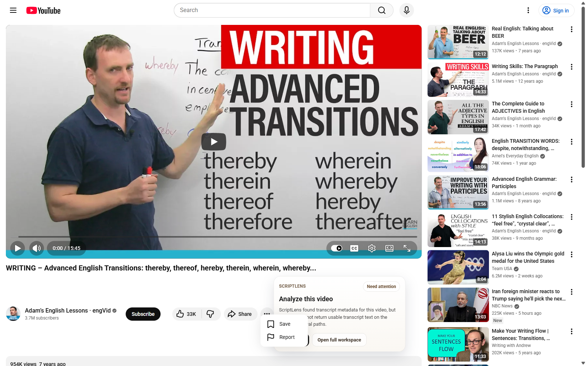
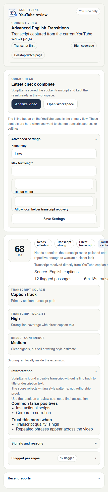
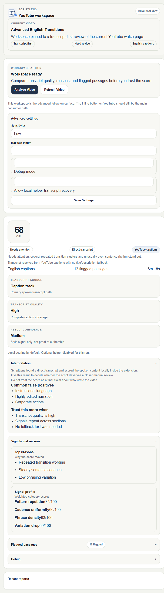

Starts with the spoken content.
ScriptLens tries YouTube transcript paths first. Title and description fallback only happens when the user explicitly allows it.
ScriptLens adds an inline Analyze video button to desktop youtube.com/watch pages. It checks the strongest available transcript path, scores AI-like writing patterns, and shows the verdict before you ever need the full workspace.

The default path is the inline check. The popup and side panel are there for settings, transcript choices, and a longer report view.

Quick controls for reruns, transcript options, and recent checks.

The full report surface for reasons, flagged passages, and transcript quality review.
ScriptLens tries YouTube transcript paths first. Title and description fallback only happens when the user explicitly allows it.
Scoring runs inside the extension. If transcript recovery is needed, ScriptLens can call a compatible recovery backend using just the YouTube video ID and selected language.
This release is intentionally limited to desktop youtube.com/watch pages. Shorts, m.youtube.com, and generic page scanning are out of scope.
youtube.com/watchstorage, sidePanel, and YouTube host accessScriptLens scores locally by default. If transcript recovery is enabled, the extension shares only the YouTube video ID and selected language with the configured recovery backend, which may be hosted by ScriptLens or self-hosted by the user.